Melhores produtos baratinhos de 2015
Oi meninas! Tudo bem? Para fechar o ano decidi listar os melhores produtos baratinhos de 2015 na minha opinião, que eu usei e amei o ano todo, e pretendo continuar usando em 2016. Vem comigo conferir!
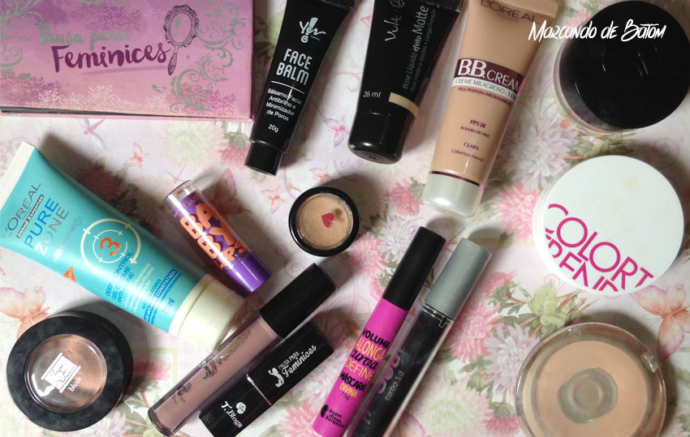
Melhor hidratante corporal, facial e labial
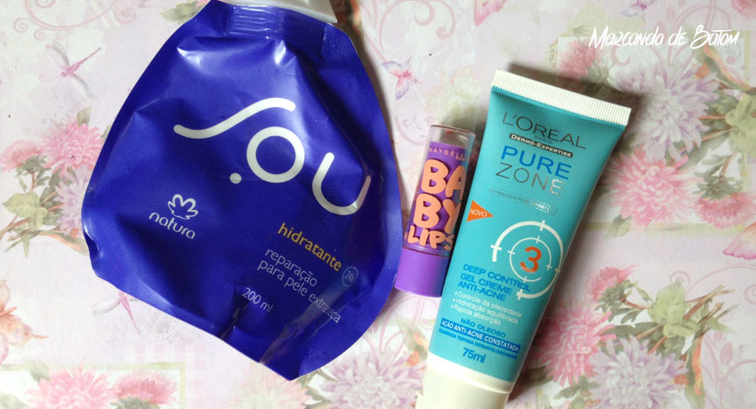
Corporal: Como eu moro no Rio, um calor de fritar qualquer pessoa, não tenho costume de usar muito hidrante. Você passa e depois de 5 minutos tá toda melada. Uso nos dias mais frios. Adoro esse da Natura Sou, que me conquistou pelo cheiro maravilhoso.
Facial: Eu não sei o que aconteceu com a minha pele esse ano, mas ela ficou um pouco oleosa. Pra controlar isso eu tenho usado esse gel creme Pure Zone da L'oreal, antes de dormir e antes da make, sinto que ele deixa minha pele sequinha por mais tempo.
Labial:
To viciada nesse Baby lips da Maybelline. Uso o tempo todo, depois do banho, antes de dormir, quando acordo. E quando estou em casa passo de 5 em 5 minutos. Hidrata demais, deixa os lábios lisinhos.
Melhor primer
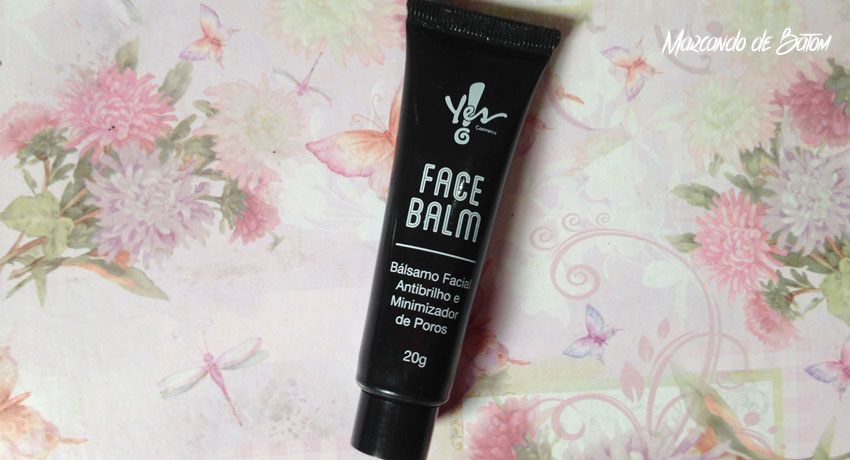
Confesso que pulei muitas vezes esse passo por puro esquecimento mesmo. Mas o primer faz toda a diferença na preparação da pele para receber a maquiagem e na duração. O que eu mais tenho usado é esse Face Balm da Yes Cosmetics, que é antibrilho e minimizador de poros.
Melhor base
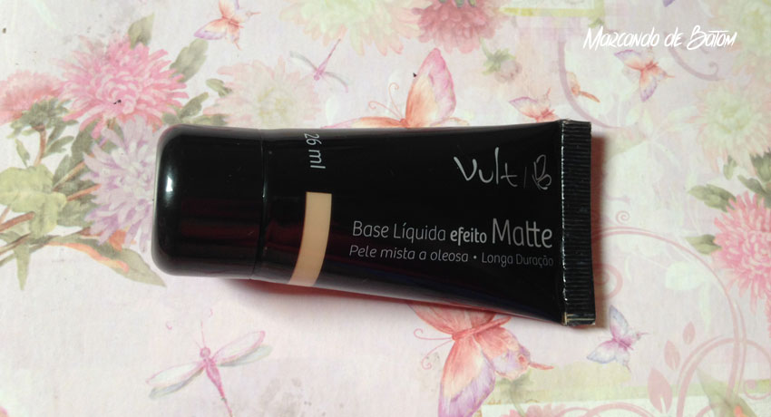
Essa base da Vult efeito matte foi o melhor lançamento do ano! Que base é essa? Que preço é esse? Do jeito que a gente gosta, produto bom e barato. Essa base é incrível, com acabamento matte, não exige uma camada de pó compacto (mas é sempre bom dar uma aplicada). Para as peles oleosas é um milagre, dura quase um dia inteiro na pele. Recomendo demais.
Melhor corretivo
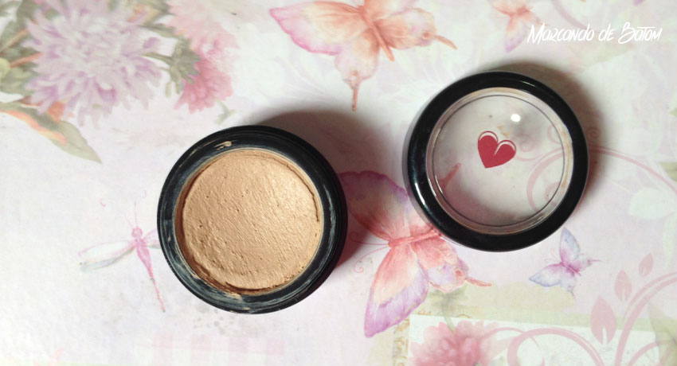
De todos os corretivos que eu usei esse ano, o melhor foi esse de longa duração da Quem disse, Berenice?, bem sequinho, cobre muito e realmente dura bastante, o dia inteiro (trabalho) e a noite toda (balada), você chega em casa toda derretida mas o corretivo continua lá firme e forte, por isso, use esse corretivo com uma base de longa duração também, pra depois de algumas horas não ficar estranho.
Melhor pó compacto
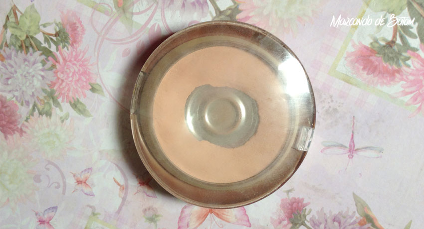
Eu só usei um pó compacto esse ano, que me atendeu super bem, que é esse da Machetti. Na foto dá pra perceber que eu usei bastante. Ele é fininho, e tem um cheirinho maravilhoso, adoro produtos cheirosos.
Melhor blush
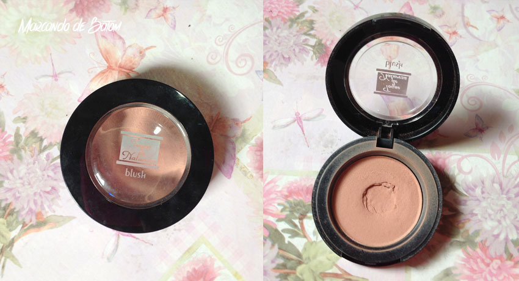
Esse blush usei praticamente todos os dias também, é um queridinho meu. Grená da Toque de Natureza, um nudezinho opaco muito fofo e discreto. Amei demais esse blush e preciso providenciar outro já!
Melhor bronzer
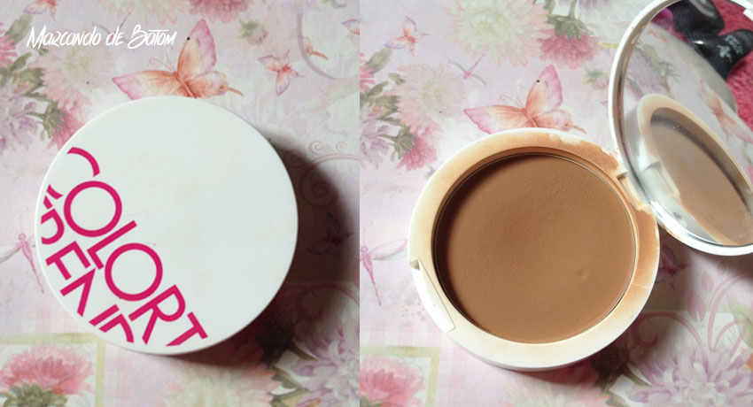
O bronzer que eu uso para contornar o rosto é esse pó compacto Bronze da Avon, uso há muito tempo e acho super válido usar um pó compacto mais escuro que o seu tom de pele como bronzer.
Melhor iluminador
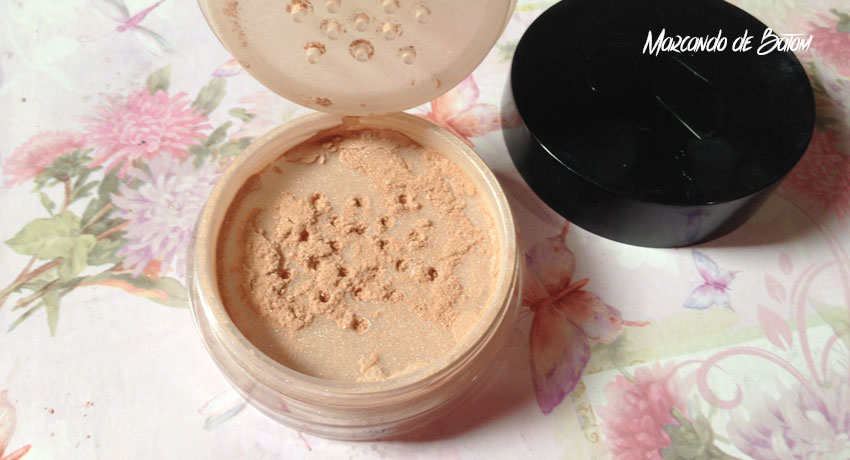
Uma coisa que não testei muito esse ano foi iluminador. Eu comprei esse da Vult HD e é o que eu tenho usado pra sair. Ele é bem discreto, dá até pra usar no dia a dia.
Melhor paleta de sombras
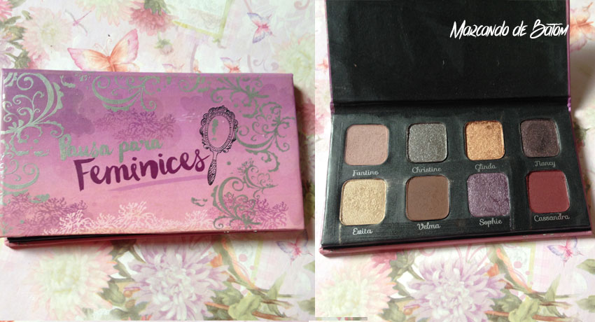
A melhor paleta do ano pra mim com certeza foi a Diva do Pausa para Feminices, assim que eu vi essa paleta eu fiquei maluca. As sombras são muito diferentes e muito pigmentadas. Simplesmente amei e em breve vai ter uma make com ela aqui no blog. Aguardem! Ela não é linda?
Melhor máscara de cílios
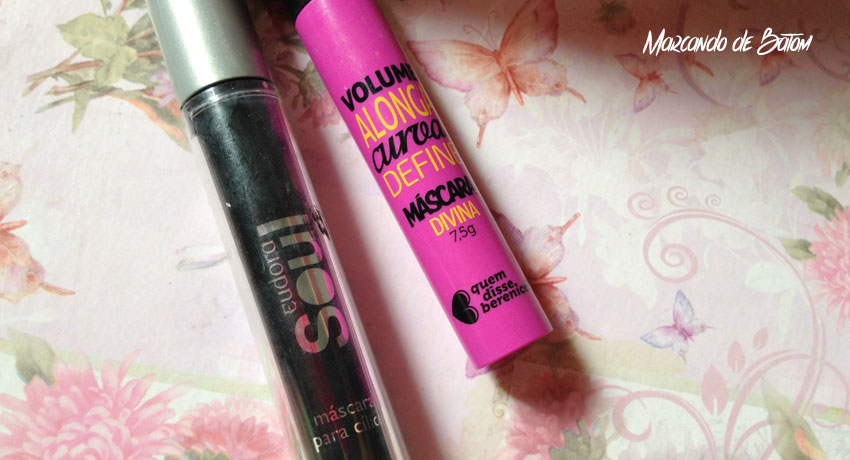
Esse ano eu abusei das máscaras de cílios. Devo ter umas 5 novinhas ainda. Como eu não sou muito chegada a cílios postiços eu me jogo nas máscaras. Eu vou mostrar duas porque eu não consegui me decidir qual era a melhor: Soul da Eudora e Divina da Quem disse, Berenice?, são ma-ra-vi-lho-sas, deixam os cílios enormes, com volume, aquele tão desejado efeito boneca.
Melhor batom
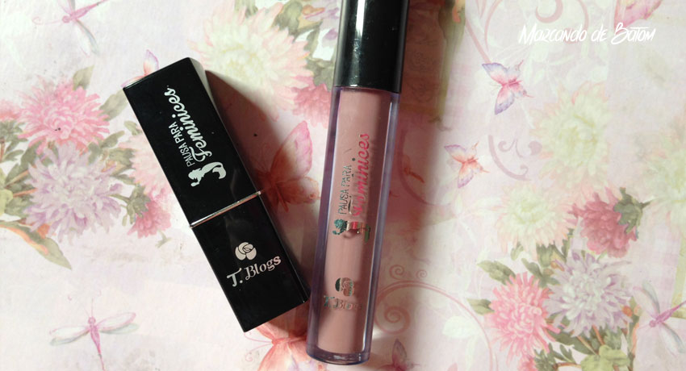
Com certeza todos os batons da coleção do Pausa Para Feminices. São os batons que eu mais comprei e usei, sou apaixonada por todas as cores e texturas, a qualidade é ótima, tão boa que não consigo descrever o quanto. Façam o teste!
Inclusive tem resenha do Kit de batons especial de natal aqui no blog. <3
Melhor delineador
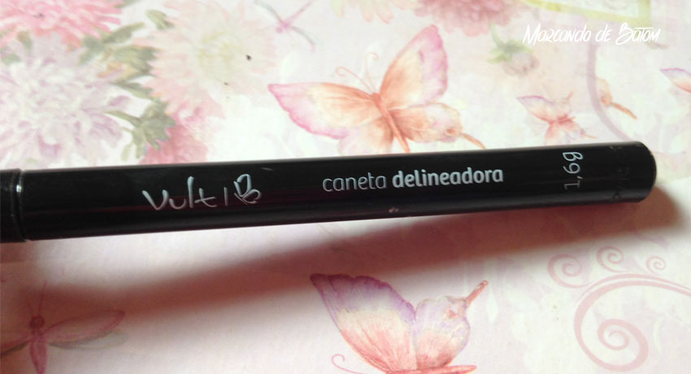
Em caneta! Desde que lançaram esse tipo de delineador eu tenho usado muito, é o meu preferido. É muito mais fácil de aplicar e é perfeito pra fazer delineado gatinho. O meu favorito é esse da Vult, muito pigmentado e tem a pontinha bem fininha.
E esses foram os meus produtos favoritos do ano, e que em 2016 tenha muito mais, né?